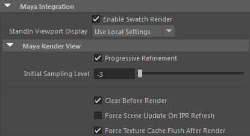
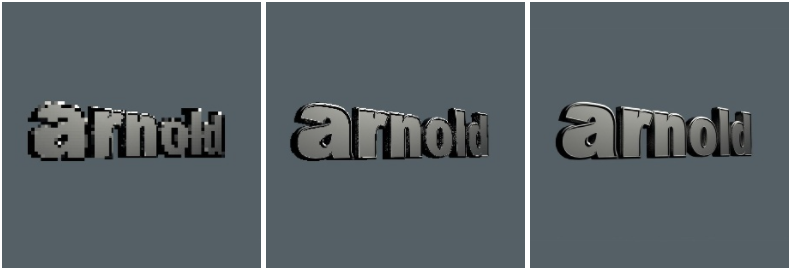

“Maya 集成”(Maya Integration)部分可以控制各种 Arnold 系统设置。
Hypershade 窗口和属性编辑器中的一个开关，用来启用或禁用样例渲染。
一个全局选项，用来覆盖 Maya 视口中的替代对象显示。使用局部设置(Use Local Settings) - 这是默认行为。边界框(Bounding Box) - 强制将所有替代对象显示到边界框。禁用绘制(Disable Draw) - 禁用所有替代对象的显示。禁用加载(Disable Load) - 禁止加载替代对象。
图像会渲染多次，且每次渲染时都会增加 AA 采样数，直至达到“渲染设置”(Render Settings)中的“摄影机(AA)”(Camera (AA))采样数设置的完整质量。禁用此选项将恢复为常用的渲染选项。

第一次渐进渲染使用的初始 AA 采样数。负值会对渲染进行子采样，从而更快在渲染窗口中提供反馈。
初始采样级别(Initial Sampling Level)：-6 到 0
重新渲染场景前，请清除渲染视图。此外，请在所渲染的渲染块四周显示边界。
指定是否每次 IPR 刷新时 Arnold 都需要更新其场景数据以与 Maya 场景匹配。如果更改不在 IPR 中反映，请启用此选项。
清除纹理缓存，强制重新加载纹理。